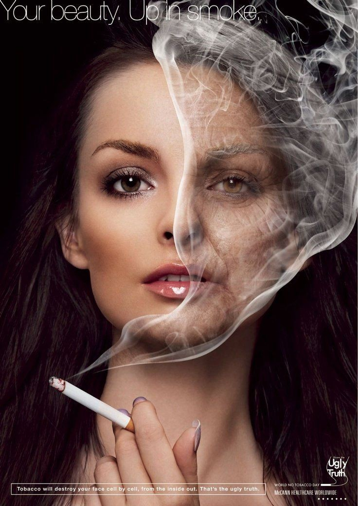
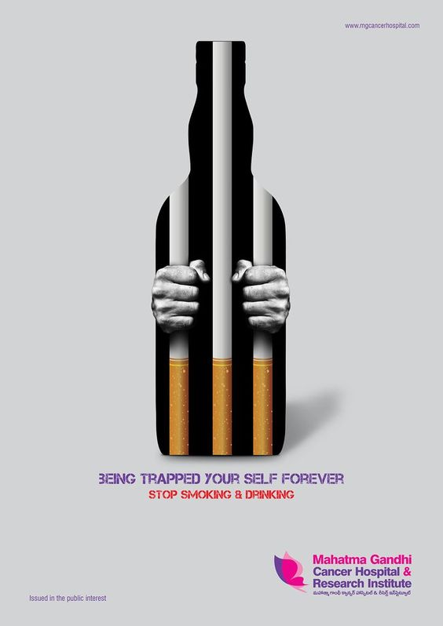

Соціальна реклама – інформація будь-якого виду, розповсюджена в будь-якій формі, яка спрямована на досягнення суспільно-корисних цілей, популяризацію загальнолюдських цінностей, розповсюдження якої не має на меті отримання матеріального прибутку. Основними носіями соціальної реклами є плакати. Вплив соціального плакату може бути збільшений за допомогою використання розроблених принципів формування колірної гами.
Робота з формування кольорових рішень для соціальної реклами є актуальною через необхідність адаптувати колірну гаму до сприйняття людей у контексті соціальних проблем. Щоб ефективно комунікувати зі всіма верствами населення, необхідно створити максимально універсальну колірну палітру, яка зможе привертати увагу до соціальної реклами та спонукати до дії. Особливо важливо мати змогу взаємодіяти з глядачами, щоб вони не тільки сприймали цікаве зображення, але також розуміли повідомлення соціальної реклами.
Використання психології кольору може бути корисним інструментом для привернення уваги аудиторії до соціальної реклами. Колірна гама може бути важливим елементом дизайну соціальних плакатів, який допомагає досягти бажаного ефекту і передати потрібний соціальний меседж. Використання соціальної реклами є актуальним і ефективним способом діагностики та корекції соціальних проблем, оскільки його метою є привернення уваги до проблеми, розкриття причин і пояснення відповідальності за дії.